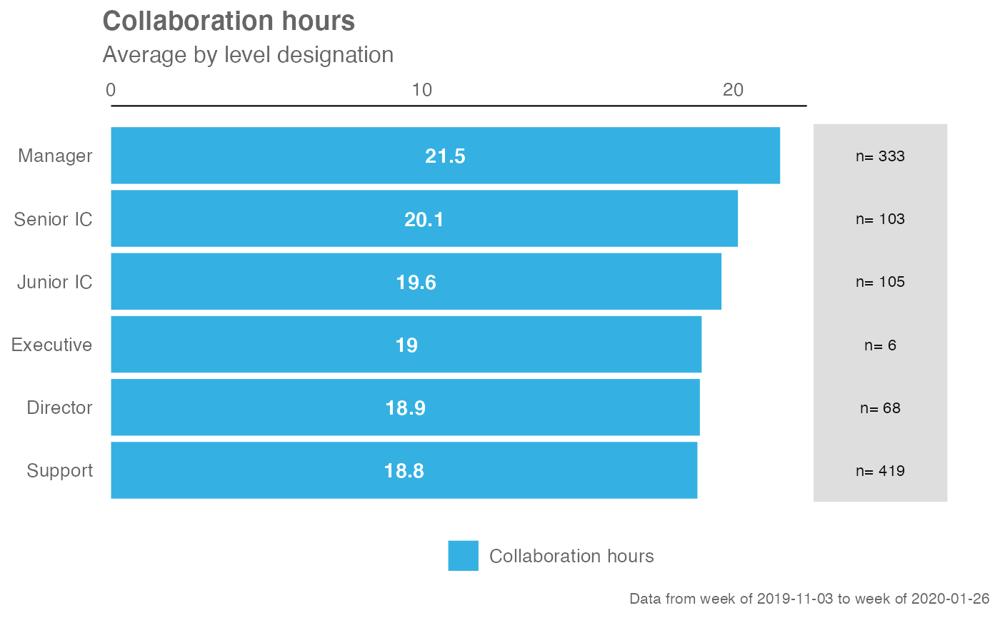
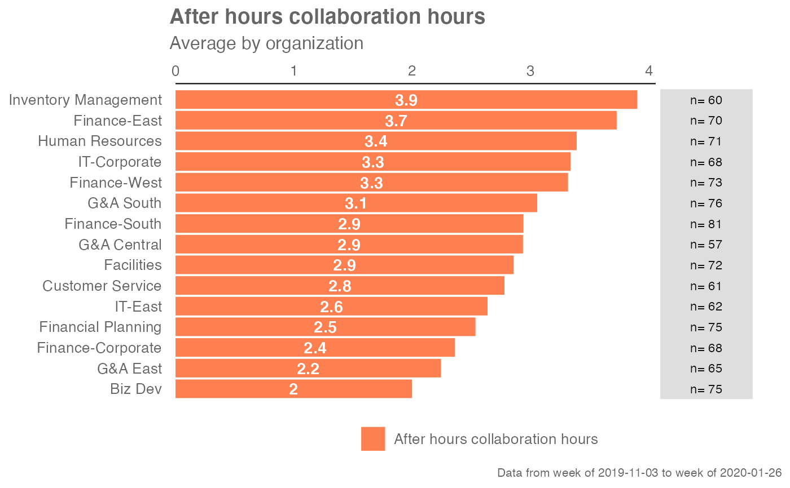

Provides an overview analysis of a selected metric by calculating a mean per metric. Returns a bar plot showing the average of a selected metric by default. Additional options available to return a summary table.
create_bar( data, metric, hrvar = "Organization", mingroup = 5, return = "plot", bar_colour = "default", na.rm = FALSE )
Arguments
| data | A Standard Person Query dataset in the form of a data frame. |
|---|---|
| metric | Character string containing the name of the metric, e.g. "Collaboration_hours" |
| hrvar | HR Variable by which to split metrics, defaults to "Organization" but accepts any character vector, e.g. "LevelDesignation" |
| mingroup | Numeric value setting the privacy threshold / minimum group size. Defaults to 5. |
| return | Character vector specifying what to return, defaults to "plot". Valid inputs are "plot" and "table". |
| bar_colour | String to specify colour to use for bars.
In-built accepted values include "default" (default), "alert" (red), and
"darkblue". Otherwise, hex codes are also accepted. You can also supply
RGB values via |
| na.rm | A logical value indicating whether NA values should be stripped before the computation proceeds. Defaults to FALSE. |
Value
Returns a ggplot object by default, where 'plot' is passed in return.
When 'table' is passed, a summary table is returned as a data frame.
See also
Other General:
create_bar_asis(),
create_boxplot(),
create_dist(),
create_fizz(),
create_line_asis(),
create_line(),
create_period_scatter(),
create_rank(),
create_scatter(),
create_stacked(),
cut_hour(),
extract_hr(),
hrvar_count(),
identify_outlier()
Examples
# Return a ggplot bar chart create_bar(sq_data, metric = "Collaboration_hours", hrvar = "LevelDesignation")create_bar(sq_data, metric = "Generated_workload_email_hours")create_bar(sq_data, metric = "After_hours_collaboration_hours")# Return a summary table create_bar(sq_data, metric = "Collaboration_hours", hrvar = "LevelDesignation", return = "table")#> # A tibble: 6 x 3 #> group Collaboration_hours n #> <chr> <dbl> <int> #> 1 Director 18.9 68 #> 2 Executive 19.0 6 #> 3 Junior IC 19.6 105 #> 4 Manager 21.5 333 #> 5 Senior IC 20.1 103 #> 6 Support 18.8 419